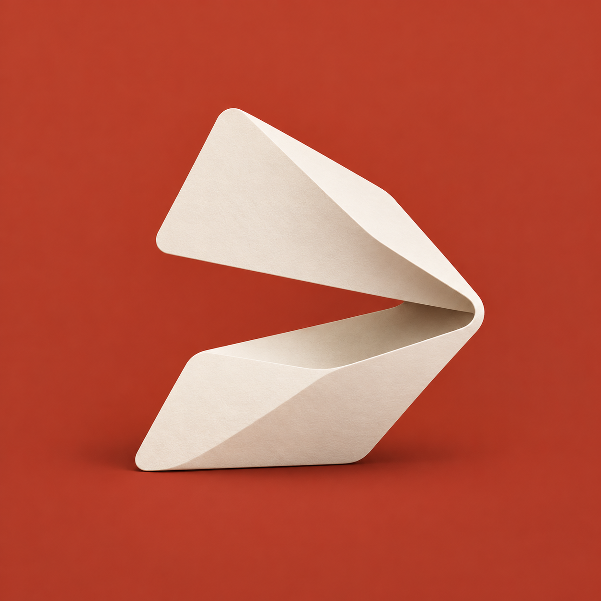
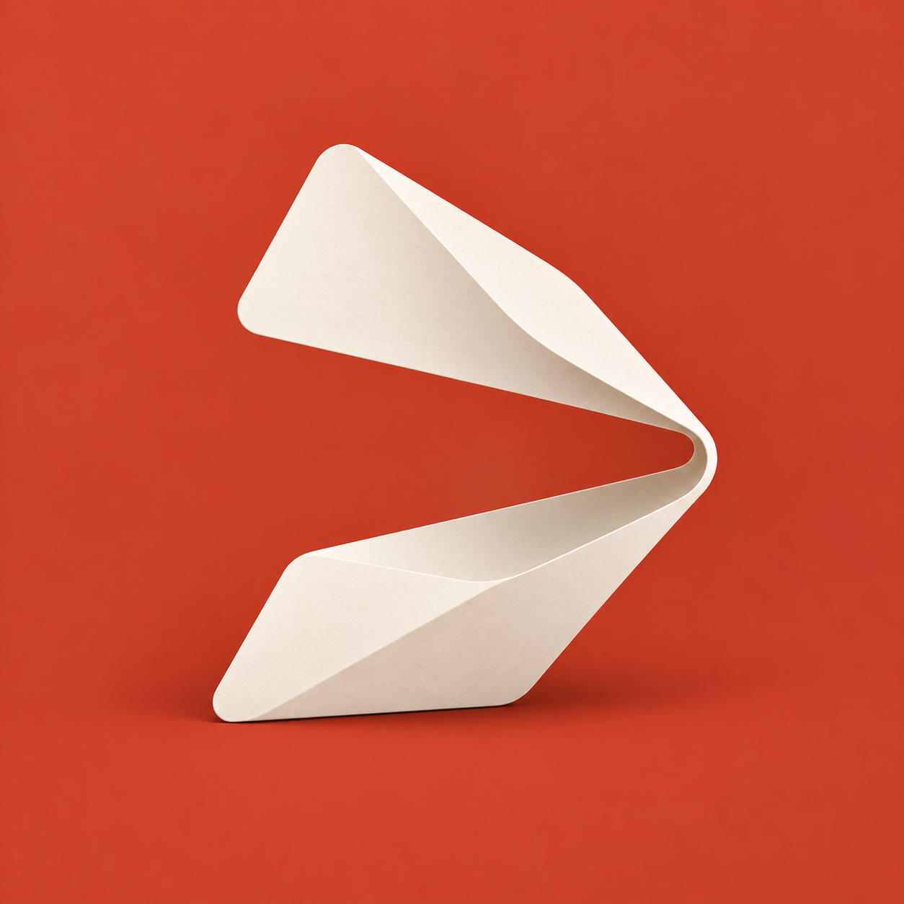
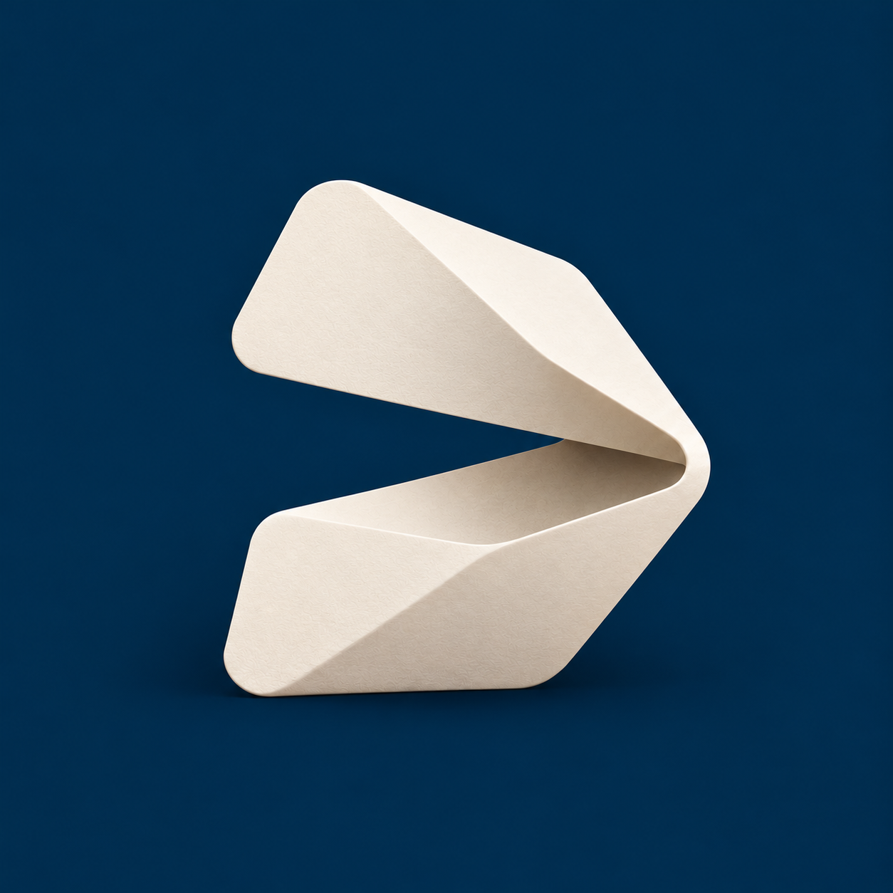

缩短双瓣跨度，收拢成更紧凑的小图标轮廓。
DOCKSHELL / SHELL REFINEMENTS
开壳深化 · 41–50
以你选中的 24 与 35 为基础，各做五款。
保留“壳体形成命令入口”的特征，比较比例、切口、折面与品牌组合。

原型 35 · 折面入口
左侧展开、右侧回折的一体壳体。
本组延伸：46–50。
41–45 · 双瓣与负形
BASED ON 24


46–50 · 折面与入口
BASED ON 35
减少透视，让左开右折的壳体更规整。

把纸纹和复杂光影简化成四块清晰折面。


加大开口、减薄折面，强调展开与轻巧。


缩短翼片、增加厚度，探索更稳定的应用图标体量。

保留 35 的折叠结构，融入 24 的紫色与命令开口。